output values 28 x 28 x 32 = 25,088
cost per value 5 x 5 x 192 = 4,800
total multiplications = 120,422,400 (120 million)Modern Networks
deep-learning
convolutional-neural-networks
computer-vision
architecture
resnet
skip-connections
network-in-network
inception
googlenet
Skip connections and ResNets, why a one by one filter does more than multiply, and how bottlenecks make the inception module affordable enough to stack.
Classic Networks covered LeNet-5, AlexNet, and VGG-16, the architectures that established the basic patterns. This page covers the three ideas that came after them, the ones most modern convolutional architectures are built from. Residual networks make it possible to train networks over a hundred layers deep. One by one convolutions give a cheap way to change the number of channels in a volume. The inception module refuses to choose a filter size at all, and uses one by one convolutions to make that affordable.
Residual Networks
Very deep neural networks are difficult to train, because of vanishing and exploding gradient problems. This section covers skip connections, which let you take the activation from one layer and feed it to another layer much deeper in the network. Using them you can build a ResNet, which makes it possible to train very deep networks, sometimes over a hundred layers.
Residual Block
ResNets are built out of something called a residual block, so it is worth describing that first.
Take two layers of a neural network. You start with the activation \(a^{[l]}\), then get \(a^{[l+1]}\), and two layers later you have \(a^{[l+2]}\). Going through the steps of that computation, you start from \(a^{[l]}\) and apply a linear operation,
\[ z^{[l+1]} = W^{[l+1]} a^{[l]} + b^{[l+1]} \]
then apply the ReLU non-linearity to get
\[ a^{[l+1]} = g(z^{[l+1]}) \]
In the next layer you apply the linear step again,
\[ z^{[l+2]} = W^{[l+2]} a^{[l+1]} + b^{[l+2]} \]
and finally another ReLU, which gives \(a^{[l+2]} = g(z^{[l+2]})\).
In other words, for information to flow from \(a^{[l]}\) to \(a^{[l+2]}\) it has to go through all of those steps. That route is called the main path of this set of layers.
In a residual network you make one change. You take \(a^{[l]}\), copy it, and pass it much further into the network, adding it just before the ReLU non-linearity. That path is called the shortcut. The last equation goes away, and instead
\[ a^{[l+2]} = g\left(z^{[l+2]} + a^{[l]}\right) \]
The addition of \(a^{[l]}\) here is what makes this a residual block.
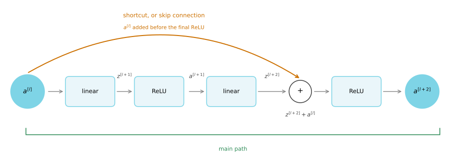
The main path is drawn unrolled into the steps it performs, which is linear, ReLU, linear, ReLU. The shortcut carries \(a^{[l]}\) forward and joins the main path at the addition, after the second linear step but before the final ReLU. That is why the last equation changes rather than a new one being added at the end.
Projected back onto a network, the block is nothing more than two of its layers. The activation \(a^{[l]}\) feeds forward through both of them in the usual way, and a copy of it travels along the shortcut and rejoins the computation inside layer \(l+2\), where it is added to every unit before the ReLU is applied.
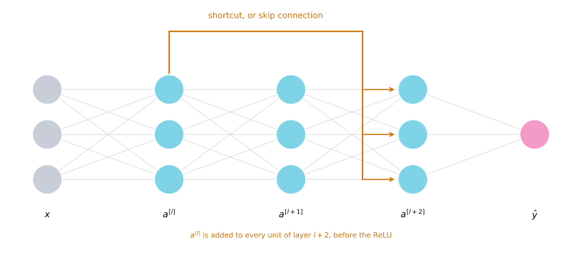
Instead of the term shortcut you also hear skip connection, because \(a^{[l]}\) skips over the two transformations in the residual branch in order to pass information deeper into the network. The inventors of ResNet are Kaiming He, Xiangyu Zhang, Shaoqing Ren, and Jian Sun, who introduced it in He, Zhang, Ren, and Sun (2016).
Stacking Blocks Into a Network
What they found is that using residual blocks lets you train much deeper networks. The way you build a ResNet is to take many of these blocks and stack them together.
Start from what the ResNet paper calls a plain network, which is just a stack of layers with no shortcuts. To turn it into a ResNet, you add the skip connections, so that every two layers gets the change described above and becomes a residual block.
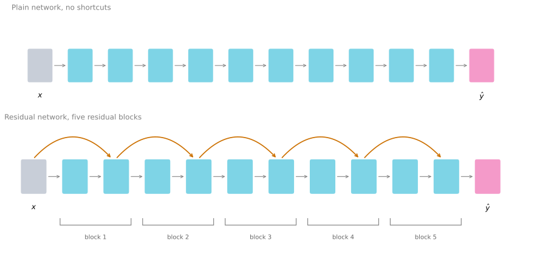
Now consider what happens if you train a plain network with a standard optimization algorithm such as gradient descent. In the ResNet experiments, increasing the depth of a plain network eventually made its training error go back up. This is the degradation problem. It is not overfitting, because the model is doing worse even on the data it was trained on.
That outcome is surprising. Provided the added layers preserve the activation shape and can represent the identity, a deeper network can represent everything its shallower counterpart can, since it could set the new layers to do nothing. So the best attainable training error should not increase with depth. That is a statement about what the architecture can represent, not a promise that gradient descent will find those identity-like parameters.
Skip connections make that easy-to-find identity path available. Consequently, a ResNet can continue lowering its training error at depths where an otherwise comparable plain network becomes difficult to optimize.
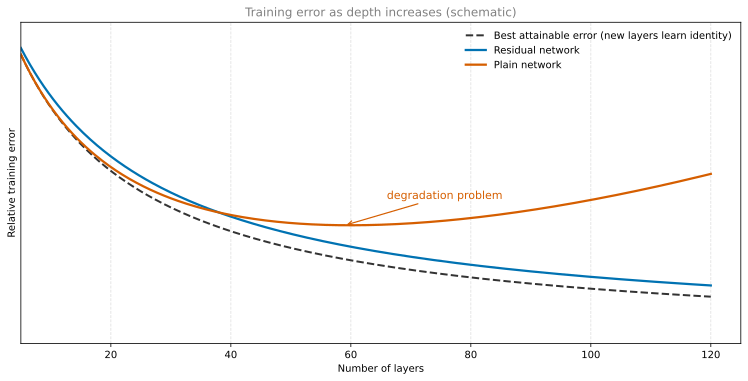
This is a schematic, not a plot of one dataset. The dashed line is the representational lower bound. If the new layers learned the identity, a deeper model could match the shallower one. The ResNet curve stays close to that bound, while the plain network peels away once the depth passes a certain point. The shape is the thing to take from the plot, rather than the unscaled values on its vertical axis.
By allowing activations to travel much deeper into the network, ResNets also give forward activations and backward gradients shorter routes through the model. That makes optimization much more manageable and lets you train networks well past the depth where comparable plain networks fail. Eventually the benefit of additional depth can plateau, but residual connections substantially push that limit outward.
Review Questions
1. Where exactly in the two layer block is \(a^{[l]}\) added, and why does the position matter?
TipAnswer
It is added to \(z^{[l+2]}\), after the linear step of the second layer but before its ReLU, giving \(a^{[l+2]} = g(z^{[l+2]} + a^{[l]})\). Thus the final ReLU acts on the combined main-path and shortcut signal. With the ReLU model used here, zeroing the residual branch gives \(g(a^{[l]}) = a^{[l]}\) because \(a^{[l]}\) is non-negative. Adding the shortcut after the ReLU would also allow the identity in this special case, so the identity argument alone does not determine the placement; the two arrangements are different block designs.
1. In theory a deeper network should never do worse on the training set than a shallower one. Why does a deep plain network do worse in practice?
TipAnswer
The theoretical argument assumes the extra layers can be set to compute the identity, so the deeper network can always reproduce the shallower one. That is a statement about what the network can represent. In practice the optimization algorithm has to find those parameters by gradient descent, and in a very deep plain network learning even the identity turns out to be hard, so the extra layers make the result worse rather than better.
1. True or false. The motivation for residual networks is that very deep networks are so good at fitting complex functions that training them almost always overfits the training data.
True
False
TipAnswer
b. The problem is the opposite one. Very deep plain networks are hard to train, and past a certain depth their training error starts rising rather than falling, so extra depth does not even buy a better fit to the data the network was trained on. Residual connections attack that optimization difficulty, which is what makes networks of a hundred layers or more trainable at all. Overfitting is a different problem, addressed by regularization and more data.
1. The equation below captures the computation in a residual block, with two terms left out. What goes in the two blanks?
\[ a^{[l+2]} = g\big(W^{[l+2]} g(W^{[l+1]} a^{[l]} + b^{[l+1]}) + b^{[l+2]} + \underline{\hspace{2em}}\big) + \underline{\hspace{2em}} \]
\(z^{[l]}\) and \(a^{[l]}\), respectively.
\(0\) and \(a^{[l]}\), respectively.
\(a^{[l]}\) and \(0\), respectively.
\(0\) and \(z^{[l+1]}\), respectively.
TipAnswer
c. The inner \(g\) produces \(a^{[l+1]}\), so the expression inside the outer \(g\) is \(z^{[l+2]}\). The shortcut adds \(a^{[l]}\) to that, before the ReLU of layer \(l+2\) runs, which puts it in the first blank. Nothing at all is added after the activation, so the second blank is \(0\). Option b has the two the wrong way round, placing the shortcut after the outer activation instead of before it, which is a different block design.
Why Residual Networks Work
The reason skip connections help is worth working through, because it is a short argument and it explains the whole design.
Take an input \(x\) feeding into some big network that outputs \(a^{[l]}\). Now make it deeper by adding two extra layers, and make those two layers a residual block with the shortcut. Assume the network uses ReLU activations throughout, so every activation is greater than or equal to zero, with the possible exception of the input \(x\).
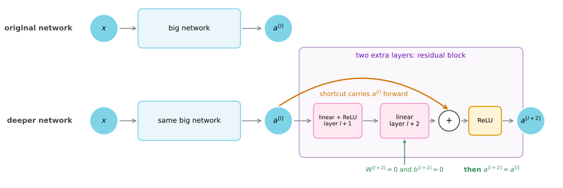
The upper row is the original network. The lower row preserves that network and appends a residual block. The orange shortcut reaches the addition before the final ReLU, so the two new layers can be present without changing the activation when their residual branch is zero.
Look at what \(a^{[l+2]}\) becomes. Copying the expression from above,
\[ a^{[l+2]} = g\left(z^{[l+2]} + a^{[l]}\right) = g\left(W^{[l+2]} a^{[l+1]} + b^{[l+2]} + a^{[l]}\right) \]
Now notice something. Suppose the residual branch contributes nothing: set \(W^{[l+2]} = 0\) and, for the sake of argument, \(b^{[l+2]} = 0\). Then those two terms go away and you are left with
\[ a^{[l+2]} = g\left(a^{[l]}\right) = a^{[l]} \]
The last step holds because \(a^{[l]}\) is itself the output of a ReLU, so it is non-negative, and applying ReLU to a non-negative quantity gives it back unchanged.
What this shows is that the identity function is easy for a residual block to represent. Getting \(a^{[l+2]} = a^{[l]}\) costs nothing more than making the residual branch zero. The shortcut itself already carries the input forward.
That is the whole point. Adding these two layers retains an accessible identity parameterization, so the deeper network can match the simpler one in principle. It is not a guarantee that any optimizer will find that setting, but it is far easier to access than in a comparable plain stack.
Of course the goal is not merely to avoid hurting performance. If those hidden units actually learn something useful, the block does better than the identity. What goes wrong in very deep plain networks is that as they get deeper it becomes genuinely difficult to choose parameters that learn even the identity, which is why so many layers end up making the result worse instead of better.
So the main reason residual networks work is that their extra layers have a convenient identity parameterization. That makes them much easier to optimize than a comparable plain stack, while still allowing the residual branch to learn useful changes when they are needed.
Matching the Dimensions
One detail in the addition is worth spelling out. The expression \(z^{[l+2]} + a^{[l]}\) assumes those two have the same dimension. This is why you see so many same convolutions in ResNets, because a same convolution preserves the height and width, which makes the addition of two equal sized volumes straightforward.
When the input and output do have different dimensions, say \(a^{[l]}\) is 128 dimensional while \(z^{[l+2]}\) is 256 dimensional, you add an extra matrix \(W_s\), in this case 256 by 128, so that \(W_s a^{[l]}\) is 256 dimensional and the addition is again between two vectors of matching size. \(W_s\) can be a matrix of parameters that is learned, or a fixed matrix that simply zero pads \(a^{[l]}\) out to 256 dimensions. Either version works.
\[ a^{[l+2]} = g\left(z^{[l+2]} + W_s a^{[l]}\right) \]
Residual Networks on Images
Applied to images, the plain version is a network where you feed in an image and pass it through a number of convolutional layers until eventually you have a softmax output at the end. To turn it into a ResNet you add the skip connections.
A few details matter here. There are a lot of 3 by 3 convolutions, and most of them are 3 by 3 same convolutions, which is exactly why you are adding equal dimension volumes. These are convolutional layers rather than fully connected ones, but because they are same convolutions the dimensions are preserved and \(z^{[l+2]} + a^{[l]}\) makes sense.
As in earlier convolutional networks, the spatial resolution is reduced as depth grows. In a standard ResNet this usually happens with a strided convolution at the start of a new stage, rather than with a pooling layer inside every block. Whenever a block changes the height, width, or channel count, its shortcut needs the \(W_s\) adjustment; in image models this is commonly a learned \(1 \times 1\) projection with the same stride. A typical ResNet has an initial convolution and pooling stem, groups of residual blocks made from \(3 \times 3\) convolutions, then global average pooling and a final classifier.
The stage layout below makes that pattern concrete for the ImageNet version of ResNet-34. Each colored card represents a sequence of basic residual blocks, each containing two \(3 \times 3\) convolutions.
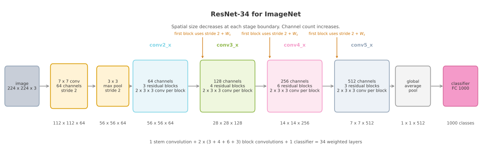
The first stage preserves the pooled \(56 \times 56\) resolution. The first block in every later stage halves the spatial size and increases the channel count, which is why it uses the projection \(W_s\) on its shortcut. Counting the stem convolution, the two convolutions in each of the 16 basic blocks, and the final classifier gives 34 weighted layers.
The next section covers a different idea, namely what happens when you use a filter that is only one by one.
Review Questions
1. Walk through why setting \(W^{[l+2]} = 0\) and \(b^{[l+2]} = 0\) makes a residual block compute the identity.
TipAnswer
Start from \(a^{[l+2]} = g(W^{[l+2]} a^{[l+1]} + b^{[l+2]} + a^{[l]})\). With both parameters zero, the first two terms vanish, leaving \(a^{[l+2]} = g(a^{[l]})\). Because \(a^{[l]}\) is the output of an earlier ReLU it is non-negative, and ReLU leaves non-negative values unchanged, so \(g(a^{[l]}) = a^{[l]}\). The block passes its input straight through.
1. Does this identity argument require L2 regularization?
TipAnswer
No. L2 regularization, or weight decay, may encourage smaller weights, but it does not make them exactly zero and is not the reason ResNets work. The point of the argument is architectural. Once the residual branch is near zero, the shortcut already supplies an identity path. That path is available whether or not weight decay is used.
1. What is \(W_s\) for, and when do you need it?
TipAnswer
\(W_s\) reshapes \(a^{[l]}\) so it can be added to \(z^{[l+2]}\) when the two have different dimensions, for example 128 against 256. It is a 256 by 128 matrix, either learned along with everything else or fixed to simply zero pad the shorter vector. You need it wherever the shortcut spans a layer that changes the dimensions, which in an image network means wherever a pooling layer or a stride greater than one sits inside the block.
1. Why do residual networks for images use so many same convolutions?
TipAnswer
Because the shortcut adds \(a^{[l]}\) to \(z^{[l+2]}\), and addition needs both to have the same height, width, and channel count. A same convolution preserves the height and width by construction, so consecutive layers inside a block produce matching volumes and the addition works with no adjustment at all. Valid convolutions would shrink the volume at every layer and require a \(W_s\) correction on every shortcut.
1. Does adding a residual block guarantee the network gets better?
TipAnswer
No. The guarantee is weaker and more useful than that. It guarantees the block can easily do no harm, because the identity is cheap to learn. Anything the two layers learn beyond the identity is an improvement on top of that floor. The contrast is with a plain network, where extra depth can actively make the training error worse because even the identity is hard to find.
1. Adding a residual block to the end of a network makes it deeper. Which of the following is true?
The performance of the network does not get hurt, because the residual block can easily approximate the identity function.
The performance of the network is hurt, because the network is made harder to train.
It shifts the behavior of the whole network to be more like the identity function.
The number of parameters decreases, because of the shortcut connections.
TipAnswer
a. This is the argument worked through just above. In a residual block \(a^{[l+2]} = g(W^{[l+2]} a^{[l+1]} + b^{[l+2]} + a^{[l]})\), so setting \(W^{[l+2]}\) and \(b^{[l+2]}\) to zero leaves \(g(a^{[l]}) = a^{[l]}\), the identity. Gradient descent can reach that easily, which sets a floor under the performance. Option b describes what happens with a plain block. Option c confuses one block being able to act as the identity with the whole network doing so, and the rest of the network is untouched. Option d is wrong because the shortcut carries no weights of its own, so the parameter count goes up by whatever the two new layers hold.
One by One Convolutions
One of the ideas that really helps in designing convolutional architectures is the one by one convolution. At first glance that seems like a strange thing to do, since a one by one filter looks like it is just multiplying by a number. It turns out to be considerably more than that.
Why It Looks Useless
Start with the case where it really is trivial. Take a 6 by 6 image with a single channel, so 6 by 6 by 1, and convolve it with a one by one by one filter whose single entry is 2. Every output value is just the input value multiplied by 2.
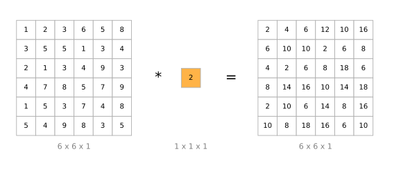
So 1, 2, 3 ends up as 2, 4, 6, and so on. Convolving a single channel image with a one by one filter does not seem particularly useful.
Why It Is Actually Useful
The picture changes completely once the input has many channels. Take a 6 by 6 by 32 volume instead of 6 by 6 by 1, and convolve it with a one by one by 32 filter.
Now the filter has to match the channel count of its input, so it holds 32 numbers. At each of the 36 positions it takes the element-wise product between the 32 numbers running down the channel axis of the input and the 32 numbers in the filter, sums them, and applies a ReLU. That gives a single real number, which becomes one entry of the output.
One useful way to think about those 32 filter numbers is as a single neuron taking 32 inputs, multiplying them by 32 weights, applying a ReLU, and producing one output. The convolution just applies that same neuron at each of the 36 positions.
More generally, if you have not one filter but several, it is as though you have not one neuron but a small layer of them, each taking all 32 numbers of one position as input. So a one by one convolution is essentially a fully connected network applied at every position of the volume, taking \(n_C\) numbers in and producing as many numbers out as there are filters.
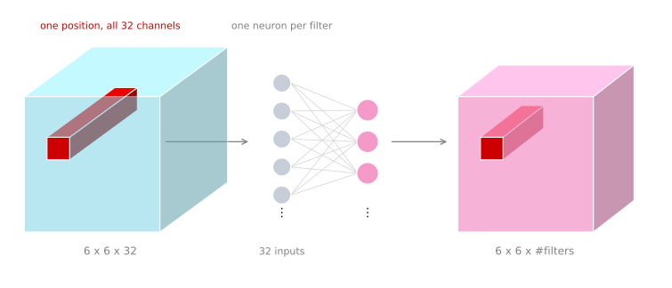
Doing that at each of the 6 by 6 positions gives an output that is 6 by 6 by the number of filters. So a one by one convolution really does carry out a non-trivial computation on the input volume. The idea is often called a one by one convolution, but it is also called network in network, from Lin, Chen, and Yan (2013). Even though the details of the architecture in that paper are not widely used, the network in network idea has been very influential, including on the inception network.
Shrinking the Number of Channels
Here is the use that matters most. Suppose you have a 28 by 28 by 192 volume.
If you want to shrink the height and width, you already know how, using a pooling layer. But what if the number of channels has grown too large and it is the channel count you want to shrink? How do you get to 28 by 28 by 32?
Use 32 filters that are one by one. Technically each filter is one by one by 192, because the number of channels in a filter always has to match the number of channels in the input. With 32 such filters the output is 28 by 28 by 32.
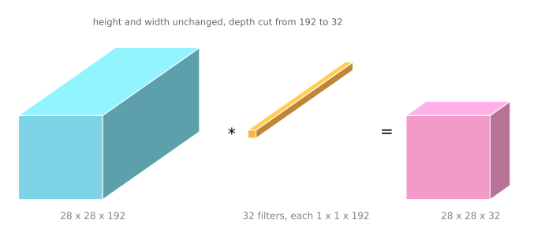
This is the counterpart to pooling. A pooling layer shrinks \(n_H\) and \(n_W\), the height and width. A one by one convolution shrinks \(n_C\), the number of channels. That distinction is what makes it so useful, and the inception network uses exactly this trick to save a large amount of computation.
Of course you do not have to shrink. Keeping the number of filters at 192 is fine too, in which case the effect of the one by one convolution is simply to add a non-linearity. It lets the network learn a more complex function by adding another layer that takes 28 by 28 by 192 in and gives 28 by 28 by 192 out.
So a one by one convolution lets you shrink the number of channels in your volumes, keep it the same, or even increase it if you want.
Review Questions
1. Why is a one by one convolution trivial on a single channel image but not on a 32 channel volume?
TipAnswer
The filter always has to match the channel count of its input, so on a 6 by 6 by 1 input the filter is 1 by 1 by 1, a single number, and the convolution is scalar multiplication. On a 6 by 6 by 32 input the filter is 1 by 1 by 32, so at each position it combines all 32 channel values into one number through a weighted sum and a ReLU. The work happens along the channel axis, which barely exists in the single channel case.
1. How many parameters does a one by one convolution with 32 filters on a 28 by 28 by 192 input have?
TipAnswer
Each filter is \(1 \times 1 \times 192\), so 192 weights plus one bias, and there are 32 of them, giving \(32 \times (192 + 1) = 6{,}176\). Note that the 28 by 28 does not appear, because a convolution reuses the same filter at every position regardless of the image size.
1. What is the difference in effect between a pooling layer and a one by one convolution?
TipAnswer
A pooling layer shrinks the height and width, \(n_H\) and \(n_W\), and leaves the number of channels alone, because it is applied to each channel independently. A one by one convolution leaves the height and width alone and changes the number of channels, \(n_C\), to whatever the filter count is. They act on different axes of the volume, which is why architectures use both.
1. If a one by one convolution keeps the channel count the same, what has it accomplished?
TipAnswer
It has added a non-linearity. Each position passes through a weighted sum and a ReLU, so the network gains another layer of representational power without changing the shape of the volume at all. That is the network in network idea, a small fully connected network applied at every spatial position.
1. True or false. A one by one convolution is the same as multiplying by a single number.
True
False
TipAnswer
b. That is true only in the degenerate case of a single channel input, where the filter really is one number. On a volume with \(n_C\) channels the filter is \(1 \times 1 \times n_C\), so at each position it takes a weighted sum over the whole depth of the volume and passes the result through a ReLU. It is a small fully connected network applied at every spatial position, not a scalar multiplication.
Inception Network
When designing a convolutional layer you have to pick things. Do you want a 1 by 1 filter, or 3 by 3, or 5 by 5? Or do you want a pooling layer instead? What the inception network says is, why not do them all. It makes the architecture more complicated, but it also works remarkably well.
Inception Module
Say you have a 28 by 28 by 192 input volume. Instead of committing to one filter size, or even to whether you want a convolutional layer or a pooling layer, an inception layer does all of them.
This first version intentionally sends the input directly into the 3 by 3 and 5 by 5 convolutions. It is the expensive design used to motivate the bottleneck layers introduced later. The completed module under Building the Full Network adds one by one reductions before those costly branches.
You could use a 1 by 1 convolution and get 28 by 28 by 64 out. Maybe you also want to try a 3 by 3, giving 28 by 28 by 128. You then stack that second volume next to the first. To make the dimensions line up, the 3 by 3 is a same convolution, so its output height and width stay at 28 by 28. Perhaps a 5 by 5 filter works better, so do that too and have it output 28 by 28 by 32, again as a same convolution.
Finally, maybe you do not want a convolutional layer at all. Apply pooling with same padding and a stride of one, then use a one by one convolution to project that branch down to 32 channels. That gives a fourth 28 by 28 by 32 output to stack with the others.
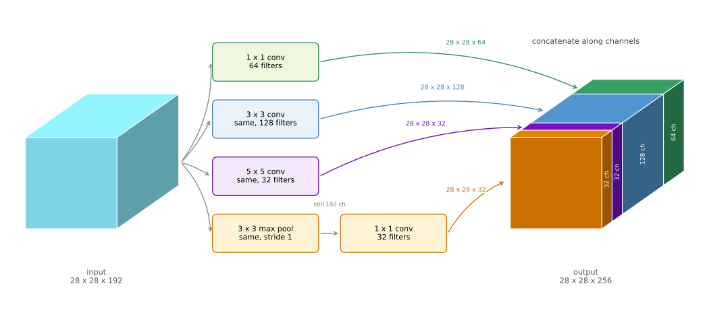
One detail about the pooling branch is unusual and easy to miss. To keep its height and width at 28 by 28, it uses same padding together with a stride of one. Pooling alone would still have 192 channels, because pooling works independently on every input channel. The following one by one convolution is what projects the pooled volume down to 32 channels, allowing it to concatenate with the other branches.
With an inception module like this you input one volume and output another. Adding up the branches, \(64 + 128 + 32 + 32 = 256\), so the module takes 28 by 28 by 192 in and gives 28 by 28 by 256 out.
That is the heart of the inception network, due to Christian Szegedy, Wei Liu, Yangqing Jia, Pierre Sermanet, Scott Reed, Dragomir Anguelov, Dumitru Erhan, Vincent Vanhoucke, and Andrew Rabinovich, published as Szegedy et al. (2015). The basic idea is that instead of picking one filter size or pooling and committing to it, you do them all, concatenate the outputs, and let the network learn whichever combination of filter sizes it wants to use.
Problem of Computational Cost
There is a problem with the inception module as described, namely computational cost. It is worth working out the cost of just the 5 by 5 branch.
That branch takes the 28 by 28 by 192 input and applies a 5 by 5 same convolution with 32 filters, producing 28 by 28 by 32. There are 32 filters because the output has 32 channels, and each filter is 5 by 5 by 192.
The total number of multiplications is the number of output values times the number of multiplications needed for each one. There are \(28 \times 28 \times 32\) output values, and each one costs \(5 \times 5 \times 192\) multiplications.
You can do 120 million multiplications on a modern computer, but it is still an expensive operation, and this is one branch of one module.
Bottleneck Layer
Using the one by one convolution, the cost can be cut by roughly a factor of ten.
Here is the alternative. Take the same 28 by 28 by 192 input, use a one by one convolution to reduce it to 16 channels instead of 192, and then run the 5 by 5 convolution on that much smaller volume to get the final output. The input and output dimensions are unchanged, still 28 by 28 by 192 in and 28 by 28 by 32 out. What has changed is that the huge volume on the left has been shrunk to a much smaller intermediate volume with 16 channels instead of 192.
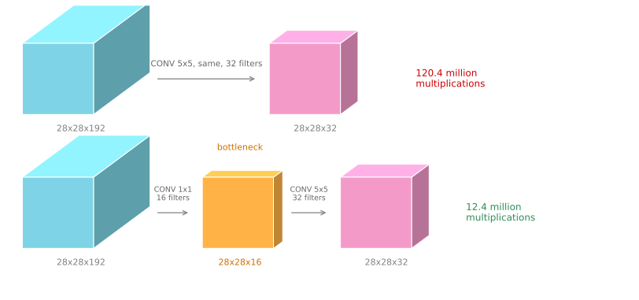
This intermediate volume is sometimes called a bottleneck layer, because a bottleneck is the smallest part of something. If you picture a glass bottle, the bottleneck is where it narrows. In the same way this is the narrowest part of the network, where the representation is shrunk before being expanded again.
Now the cost. The one by one convolution has 16 filters, each of dimension 1 by 1 by 192, where that 192 matches the input channel count. Then the 5 by 5 convolution runs on the 16 channel volume.
1x1 step 28x28x16 outputs, 192 each = 2,408,448 (2.4M)
5x5 step 28x28x32 outputs, 5x5x16 each = 10,035,200 (10.0M)
total = 12,443,648 (12.4M)
against the direct version = 120,422,400 (120.4M)
ratio = 0.103, about one tenthSo the computational cost drops from about 120 million multiplications to about 12.4 million, roughly a tenth. The number of additions needed is very similar to the number of multiplications, which is why only multiplications are counted.
You might reasonably worry that shrinking the representation so dramatically hurts performance. It turns out that so long as the bottleneck is implemented within reason, you can shrink the representation size significantly without seeming to hurt performance, while saving a great deal of computation.
Review Questions
1. Why does the max pooling branch need same padding and a stride of one, which is not how pooling is normally used?
TipAnswer
Because the four branch outputs are concatenated along the channel axis, and concatenation requires them to agree on height and width. The other three branches are same convolutions producing 28 by 28, so the pooling has to produce 28 by 28 as well. Normal pooling with \(f=2\), \(s=2\) would halve it to 14 by 14 and could not be stacked. Same padding with a stride of one is the only setting that leaves the spatial size untouched.
1. Where does the 120 million figure come from?
TipAnswer
It is the number of output values times the cost of each. The output is 28 by 28 by 32, which is 25,088 values, and each one requires an element-wise product over a \(5 \times 5 \times 192\) window, which is 4,800 multiplications. Multiplying gives \(25{,}088 \times 4{,}800 = 120{,}422{,}400\).
1. The bottleneck version does two convolutions instead of one. Why is doing more layers cheaper?
TipAnswer
Because cost is driven by the depth of the volume the expensive filter has to look through. The 5 by 5 filter is the costly part, at \(5 \times 5 \times n_C\) multiplications per output value. Running it against 192 channels costs 4,800 per value; running it against 16 costs 400. The extra 1 by 1 layer that performs the reduction is cheap, at 192 multiplications per value over a smaller output, so paying 2.4 million to avoid 110 million is a large net win.
1. Which of the following are true about the inception network? Check all that apply.
Making an inception network deeper will not hurt the training set performance.
Inception blocks allow the use of a combination of 1 by 1, 3 by 3, and 5 by 5 convolutions and pooling, by applying one layer after the other.
Inception blocks allow the use of a combination of 1 by 1, 3 by 3, and 5 by 5 convolutions and pooling, by stacking up all the activations resulting from each type of layer.
One problem with simply stacking up several layers is the computational cost of it.
TipAnswer
c and d. Stacking the four branch outputs along the channel axis to get one volume, so the network does not have to commit to a single filter size, is the whole idea of the module, and the computational cost of doing so is exactly what the 1 by 1 bottleneck exists to control. Option b describes the branches running in series, which is not what happens, since they run in parallel on the same input and are concatenated. Option a is the mistake corrected by the residual networks section, where stacking more layers onto a plain network is shown to make the training error rise rather than fall.
Building the Full Network
With the bottleneck idea in hand, the complete inception module can be assembled. The module takes as input the activation from some previous layer, again 28 by 28 by 192.
The example worked through above was the 1 by 1 followed by the 5 by 5, where the 1 by 1 has 16 channels and the 5 by 5 outputs 28 by 28 by 32. To save computation on the 3 by 3 convolution you do the same thing there, putting a 1 by 1 reduction in front of it. In the concrete GoogLeNet inception(3a) configuration shown below, that reduction uses 96 filters and the following 3 by 3 convolution uses 128 filters.
The standalone 1 by 1 branch needs no bottleneck reduction. Its convolution is already inexpensive, so it directly produces the 28 by 28 by 64 branch output. A second 1 by 1 layer could add another learned transformation, but it would not serve the cost-saving purpose of reducing channels before a larger spatial filter.
Finally the pooling layer. To be able to concatenate everything, the pooling uses same padding so the output stays 28 by 28. But notice that max pooling, even with same padding and a 3 by 3 filter at stride 1, gives 28 by 28 by 192. Pooling acts on each channel independently, so it has the same depth as its input, which is a lot of channels. So you add one more 1 by 1 convolutional layer after the pooling to shrink the number of channels, taking it down to 28 by 28 by 32 using 32 filters of dimension 1 by 1 by 192. Without that step the pooling branch would dominate the channels of the final output.
Then you take all of these blocks and do channel concatenation, giving \(64 + 128 + 32 + 32 = 256\), so 28 by 28 by 256.
That is one inception module, and the inception network is more or less a lot of these modules put together. In the picture from the paper you notice many repeated blocks, and although the whole thing looks complicated, each block is just the module above. There are some extra max pooling layers between them to change the height and width, but essentially the network is these blocks repeated at different positions. If you understand the inception block, you understand the inception network.
Side Branches
There is one more detail if you read the paper, namely some additional side branches.
The last few layers of the network are a fully connected layer followed by a softmax that makes the prediction. What the side branches do is take a hidden layer from partway through the network, pass it through a few fully connected layers, and use that to make a prediction with its own softmax output.
What this accomplishes is to help ensure that the features computed in the intermediate layers, not just the final ones, are already good enough to predict the output class of an image. This appears to have a regularizing effect and helps prevent the network from overfitting.
This particular network was developed by authors at Google, who called it GoogLeNet, spelled that way to pay homage to LeNet.
As a closing detail, the name inception comes from the paper citing the “we need to go deeper” meme, with the URL as an actual reference, as motivation for building deeper networks. It is not often that research papers get to cite internet memes.
Since the original module, the authors and others have built newer versions, so you sometimes see inception v2, v3, and v4 in use. There is also a version that combines the inception module with the residual network idea of skip connections, which sometimes works even better. All of them are built on the basic idea of the inception module stacked many times over.
The next page turns to architectures designed for devices where computation is scarce.
Review Questions
1. Why does the pooling branch need a 1 by 1 convolution after it, when the other branches have theirs before?
TipAnswer
Pooling has no learned filters and operates independently on each channel, so its output has the same depth as its input, 192 channels. In this branch the goal is to preserve pooled features first, then learn a 32-channel projection, so the 1 by 1 convolution comes after pooling. Moving it before pooling would define a different computation rather than an equivalent rearrangement. Without the projection, the pooling branch alone would contribute 192 channels and dominate the concatenated output.
1. Why is there no 1 by 1 reduction in front of the 1 by 1 branch?
TipAnswer
It is not needed as a bottleneck. The reductions exist to make an expensive 3 by 3 or 5 by 5 filter process fewer channels, while a 1 by 1 filter is already inexpensive. Two 1 by 1 layers with a non-linearity between them could learn a richer transformation, but that is a different design goal from the computational reduction used in the other two convolution branches.
1. What do the side branches in GoogLeNet do, and why do they help?
TipAnswer
They take a hidden layer partway through the network, run it through a few fully connected layers, and attach their own softmax prediction. This forces the intermediate features to be good enough to classify the image on their own, rather than only being useful after every remaining layer has run. That acts as a regularizer and helps prevent overfitting.
1. An inception module lets the network use every filter size at once. What is the cost of that flexibility, and how is it managed?
TipAnswer
The cost is computation. Running a 5 by 5 convolution directly against a 192 channel volume takes about 120 million multiplications for one branch of one module, and the network stacks many modules. It is managed with 1 by 1 bottleneck layers that shrink the channel count before the expensive filters run, cutting that branch to about 12.4 million, roughly a tenth, with no measurable loss in performance.
References
- He, K., Zhang, X., Ren, S., & Sun, J. (2016). Deep residual learning for image recognition. In 2016 IEEE Conference on Computer Vision and Pattern Recognition (CVPR) (pp. 770-778). IEEE. https://doi.org/10.1109/CVPR.2016.90
- Lin, M., Chen, Q., & Yan, S. (2013). Network in network. arXiv. https://doi.org/10.48550/arXiv.1312.4400
- Szegedy, C., Liu, W., Jia, Y., Sermanet, P., Reed, S., Anguelov, D., et al. (2015). Going deeper with convolutions. In 2015 IEEE Conference on Computer Vision and Pattern Recognition (CVPR) (pp. 1-9). IEEE. https://doi.org/10.1109/CVPR.2015.7298594